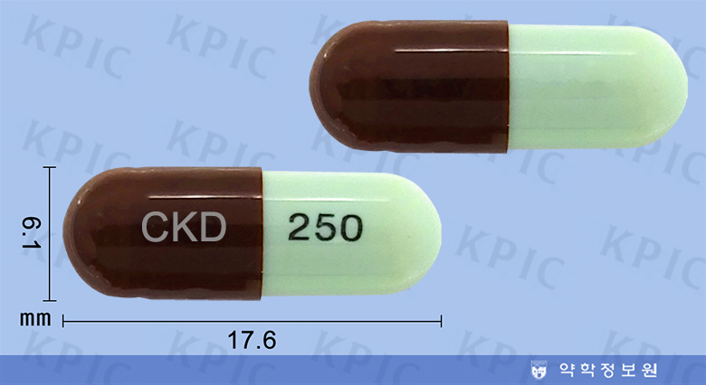

테트라사이클린
출처 : 약학정보원
유효균종 : 콜레라균, 페스트균, 박테로이드, 브루셀라, 대장균, 인플루엔자균, 클레브시엘라, 연쇄구균, 폐렴연쇄구균, 황색포도구균, 임균, 매독트레포네마, 리스테리아 모노사이토제니스, 탄저균, 푸조박테륨, 야토병균
적응증 : 발진티푸스, 발진열, 양충병(쯔쯔가무시병), 큐열, 록키산 홍반열, 리케치아두, 미코플라스마폐렴, 비둘기병, 앵무병, 서혜육아종, 성병성림프육아종, 재귀열, 연성하감, 콜레라, 페스트, 야생토끼병, 브루셀라증, 매독, 리스테리아증, 탄저, 여드름, 봉입체결막염, 편도염, 인두염, 후두염, 기관지염, 기관지확장증(감염 시), 폐렴, 폐농양, 유선염, 림프관염, 골수염, 성홍열, 외이도염, 중이염, 부비동염, 유양돌기염, 임질, 신우신염, 방광염, 요도염, 자궁내감염, 가스괴저, 와일병, 백일해, 급성눈물주머니염, 치조농양, 뇌농양
용법/용량 : 성인 : 테트라사이클린염산염으로서 1일 1 g(역가)을 4회 분할 투여한다.
부작용/주의사항 : 1. 일정한 시간에 일정한 간격으로 지속적 복용하여 균을 죽일 수 있는 최소한의 혈중농도를 유지해 주어야 함 2. 약물 사용 전 반드시 약물반응검사 (피부반응검사)를 시행해야 함